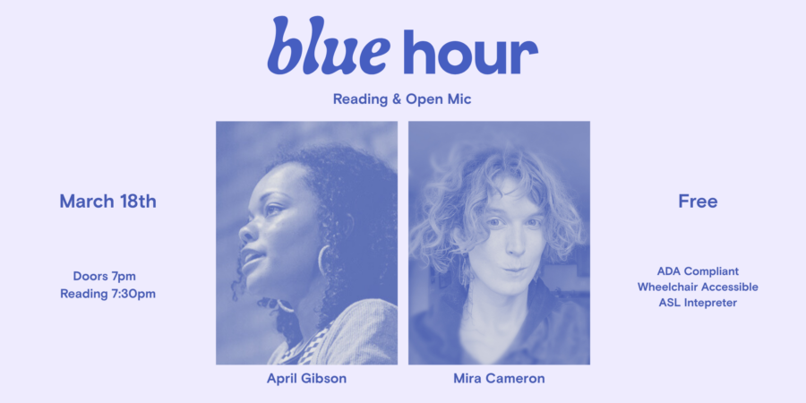

Chicago Poetry Center’s March Blue Hour Featuring April Gibson and Mira Cameron
The Chicago Poetry Center presents BLUE HOUR, a free monthly in-person reading series and generative writing workshop. Our March featured readers are April Gibson and Mira Cameron.
Each event takes place at Haymarket House (800 W. Buena) and includes a brief open mic followed by two featured poets. Pre-registration is free and recommended. The open mic includes five readers drawn lottery-style from a hat that goes out at 7:15. The reading starts promptly at 7:30. Each open mic poet reads one poem or for three minutes, whichever comes first.
EVENT DETAILS FOR March 18: * Workshop (registration required) begins promptly at 6 p.m., ends at 7 p.m. * Performance space doors open and open mic sign-up begins at 7 p.m. * Reading (registration recommended but not required) begins at 7:30, followed by community gathering time. * Reading registration is free; the workshop is sliding scale with a suggested donation of $10. * Register for the workshop here: https://BHWorkshopMarch2026.eventbrite.com * Get your ticket for the reading here: https://March2026BlueHour.eventbrite.com * Livestream is available here: https://March2026livestream.eventbrite.com
ABOUT THE READING:
The Blue Hour reading features readings by two poets from Chicago and beyond, preceded by a five person lottery-style open mic and followed by community gathering time.
ABOUT THE WORKSHOP:
The Blue Hour generative writing workshop is suitable for writers and poetry fans of all levels. We will discuss a poem together, then Marty will guide the group through individual writing on an exploratory prompt that draws on themes from the poem.
ABOUT THE SPACE: